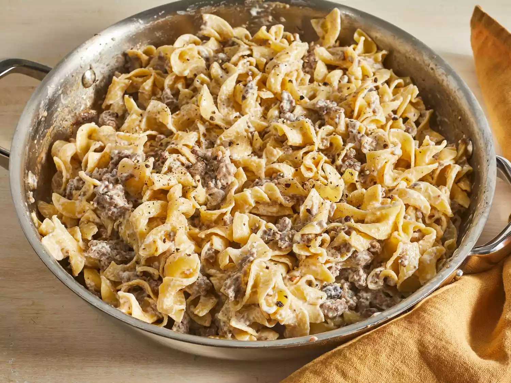

Simple Beef Stroganoff
Return to Homepage

Description
This rich and creamy ground beef stroganoff with egg noodles is super simple to prepare, and ready to serve in under 30 minutes making it a great choice for busy weeknights. Garnish with freshly chopped parsley for added color and flavor.
Ingredients
- 1 (8 ounce) package egg noodles
- 1 pound ground beef
- 1 (10.5 ounce) can fat-free condensed cream of mushroom soup
- 1 tablespoon garlic powder
- ½ cup sour cream
- salt and ground black pepper to taste
Steps
- Gather all ingredients.
- Sauté ground beef in a large skillet over medium heat until browned and crumbly; 5 to 10 minutes.
- At the same time, fill a large pot with lightly salted water and bring to a rapid boil. Cook egg noodles at a boil until tender yet firm to the bite, 7 to 9 minutes. Drain and set aside.
- Drain and discard any fat from the cooked beef. Stir condensed soup and garlic powder into the beef. Simmer for 10 minutes, stirring occasionally.
- Remove beef from the heat. Add egg noodles and stir to combine. Stir in sour cream and season with salt and pepper.
- Serve hot and enjoy!